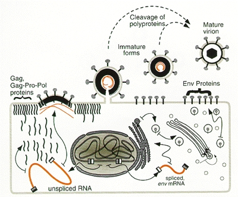

Copyright © 1997, Cold Spring Harbor Laboratory Press.
NCBI Bookshelf. A service of the National Library of Medicine, National Institutes of Health.
Coffin JM, Hughes SH, Varmus HE, editors. Retroviruses. Cold Spring Harbor (NY): Cold Spring Harbor Laboratory Press; 1997.
Bookshelf ID: NBK19456PMID: 21433349
Transfer of the RNA genome of a retrovirus from one cell to another requires its assembly within the structure of an infectious virion. Although most of the components of the retroviral particle have been identified (see Fig. 1 and Chapter 2), the molecular details of the assembly mechanisms are poorly understood. This may seem surprising since the number of distinct proteins contained in a retrovirus is small. What makes the process of assembly both difficult and interesting to study is its highly dynamic nature.
An examination of the mature retroviral particle cannot fully explain the steps in assembly because these components are not those from which the particle was made. Rather, all of the structural proteins of the virion, with few exceptions, are derived from three polyproteins: Gag, Gag-Pro-Pol, and Env (Fig. 2). Each of these precursor proteins has special characteristics needed for specific steps in the assembly process, and each undergoes extensive changes along the way. In brief, the surface (SU) and transmembrane (TM) proteins found on the surface of the virion are initially synthesized as a single polypeptide, the Env glycoprotein, which is assembled into oligomeric complexes in the rough endoplasmic reticulum (RER), extensively modified, and then cleaved by a cell-encoded protease during transport to the surface of the cell. In some instances, further proteolytic processing of TM occurs after the particle is released. Likewise, the proteins found on the inside the virion (matrix, MA; capsid, CA; nucleocapsid, NC; protease, PR; reverse transcriptase, RT; integrase, IN) are initially linked within the Gag and Gag-Pro-Pol proteins. The Gag protein is sufficient for directing budding at the plasma membrane, and the Pro-Pol polyproteins are incorporated into the resulting particle because they are linked to Gag. Subsequent cleavage of the Gag and Gag-Pro-Pol proteins by the viral protease brings about new shapes and arrangements inside the nascent virion as the immature particle undergoes a metamorphosis into the mature, infectious retrovirus. Even the structure of the viral RNA, packaged into the virion through an interaction with Gag, changes during the budding and maturation process.
The production of an infectious retrovirus is thus not simply a matter of putting together a multitude of proteins and nucleic acids. Rather, it is a complex progression of many molecular interactions and rearrangements involving an unknown number of intermediate structures. This chapter summarizes what is currently known about the dynamic process of retroviral assembly. In a sense, it also describes the initial steps of virion disassembly, which can be thought to begin as soon as the assembly of polyproteins and RNA is completed; i.e., the immature particles that are initially formed are relatively stable entities (in nonionic detergents, for example), but noninfectious, whereas the mature virions created when the viral protease cleaves the Gag and Gag-Pro-Pol proteins are dramatically less stable, but infectious. Further uncoating events occur when the virion enters the next cell, as described in Chapter 4.
Contents
Overview of Retroviral Assembly
Synthesis of Gag and Gag-Pro-Pol Proteins
Synthesis and Organization of Env Glycoproteins
Principles of Particle Assembly
Incorporation of Env into the Viral Particle
Figures
Figure 1
Model of a typical retroviral particle. The subviral locations of the virion components common to all retroviruses are shown.

Figure 2
Overview of retroviral assembly showing the universal features. The nucleus of the infected cell harbors an integrated provirus. Unspliced viral transcripts are used to synthesize Gag and Gag-Pro-Pol proteins in a cytosolic compartment. These polyproteins are subsequently transported to the cytoplasmic face of the plasma membrane where they mediate budding, and two copies of the viral genome are incorported into the particle. Spliced RNA transcripts are used to make Env proteins on the membrane of the RER. These proteins are transported to the external surface of the cell via the secretory pathway and then move laterally to the sites of budding for packaging. Very late or immediately after budding (dashed arrows), the Gag and Gag-Pro-Pol proteins within the immature virion are cleaved by the viral protease to produce the mature, infectious virion.